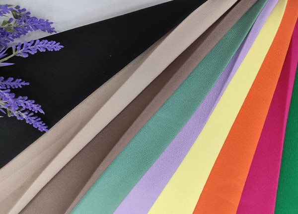
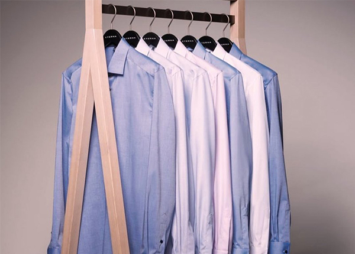
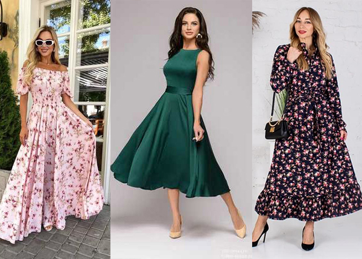
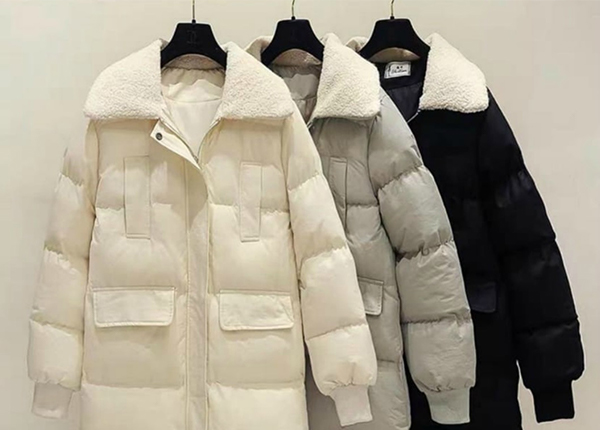
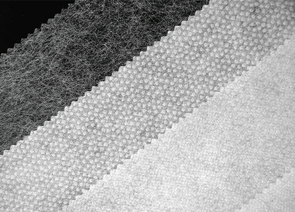
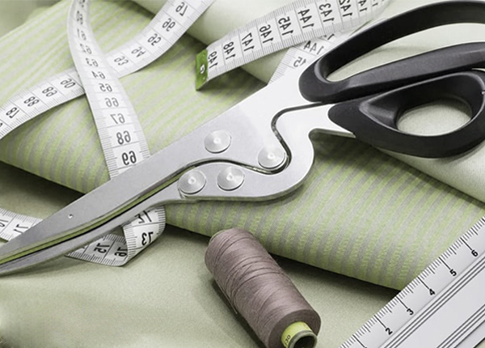

Корисне про тканини
Костюмна тканина Барбі: популярність, переваги, догляд та творчі ідеї

Що може бути більш універсальним, ніж костюм у вашому гардеробі? Його можна одягнути на урочистий захід, на роботу чи вийти на зустріч із друзями. Але, погодьтеся, що від тканини, з якої пошитий костюм, теж залежатиме ваш зовнішній вигляд - він може бути більш суворим і похмурим або легким і освіжаючим. Чому у виборі матеріалу для костюму слід звернути увагу на тканину Барбі, розповімо нижче.
Сорочечна тканина: види та вибір для пошиття стильних сорочок

Сорочка - невід'ємна частина класичного гардеробу, який присутній в нашому житті на кожному етапі становлення особистості. Але часом хочеться виділитися з «сірого» натовпу оригінальним дизайном навіть класичного одягу. Розглянемо, яку тканину підібрати для пошиття сорочки, щоб виглядати оригінально та вишукано водночас.
Тканина для сукні: гід по вибору та покупці

Сукня для дівчини – це її спосіб зачарувати оточуючих. Тому до вибору цього виду гардеробу леді підходять з особливою увагою. Їх рідко цікавлять стокові чи серійні моделі. Швидше їх вибір зупиниться на ексклюзивній дизайнерській речі або на пошиві сукні на замовлення. Тому треба знати, як правильно підібрати тканину для пошиття елегантної сукні так, щоби вона ідеально підходила під задуману модель.
Кращі тканини для пошиття курток і плащів

Що може нам забезпечити тепло та комфорт протягом усього холодного та дощового сезону? Звичайно ж, це куртка та плащ, які споконвіку залишаються головними захисниками людей від холодних поривів вітру та низьких температур. Часто виникає питання: «З якої тканини шиють вітровки?» Поговоримо про це нижче.
Флізелін та клейовий дублерин: різниця та область застосування

Кожен дизайнер, швачка та модельєр знають, наскільки прокладочні матеріали важливі під час пошиття одягу. Адже такий текстиль необхідний не лише при пошитті комірів, рукавів, самих піджаків та курток, а й при роботі з м'якими, тонкими, щільними та жорсткими полотнами. Який матеріал краще вибрати, щоб робота йшла легко – флізелін чи дублерин?
Корисні поради для розрахунку тканини при пошиві одягу

Кожна швачка знає, що при дизайні, крої та пошиття одягу дуже важливо правильно розрахувати кількість матеріалу. Адже якщо його взяти менше, то результат буде незадовільним. Для того, щоб не потрапити в подібну ситуацію, наші експерти підготували слушні поради для вас.